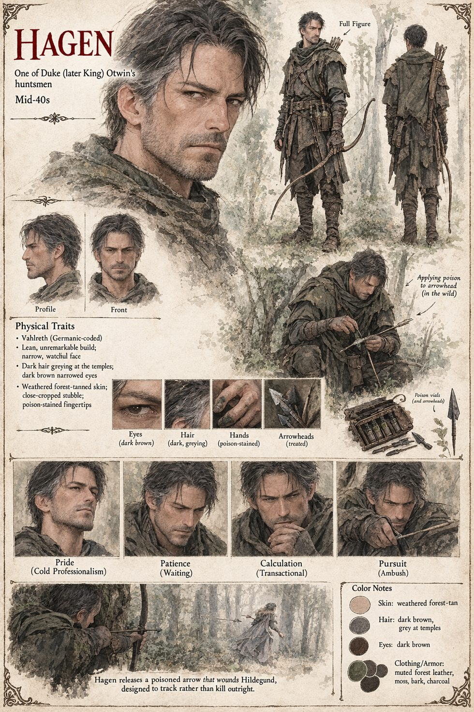

Hagen
The Apothecary · one of Otwin's huntsmen · poison as a question of rates · mid-forties by his sheet
A huntsman in Duke Otwin's service whom the men call the Apothecary without much affection, and who understands poison less as a cruelty than as a question of rates. A wound too clean kills too fast to be of use to a hunting party; a wound salted with just enough of his own preparation kills slowly enough that a girl running for her life does the tracking herself, her collapsing body marking a trail no huntsman's eye could improve. He takes no pleasure in this, precisely. He does take a certain professional satisfaction in it, the way a moneylender takes satisfaction in watching compound interest do work that violence alone could never manage half so cleanly. The third arrow at the second river, which finds Hildegund low in the side, is his: a wound built to be survived just long enough to matter, the skin blackening in a ring no clean blade could cause, the blood coming away thin and strange-smelling, the deliberate slowness of a hand that wanted her walking rather than falling for as long as her legs could manage the trick.
He is not seen again, but he is not forgotten. The poison in Hartenmark's wine comes, in Chapter Thirteen, from a supplier who had served Otwin faithfully twice before, once in a king's cup and once on a riverbank, and Chapter Twenty-Three, naming Hildegund's first act as queen, calls the first of Otwin's attempts the work of “a riverbank poisoner named Hagen” whose patient cruelty Otwin went on to refine rather than abandon. The manuscript's own revision note says Hagen is established as Sigward's poisoner. The manuscript gives him no appearance; the sheet's mid-forties, dark hair greying at the temples, narrow watchful face, stubble, forest-coloured hunter's leathers, bow and case of vials are its own.